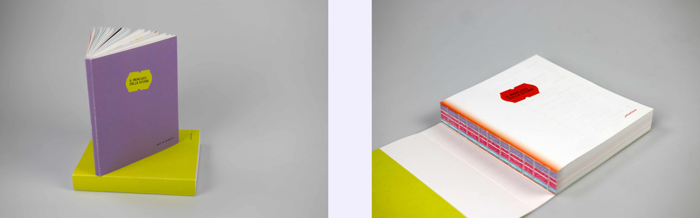
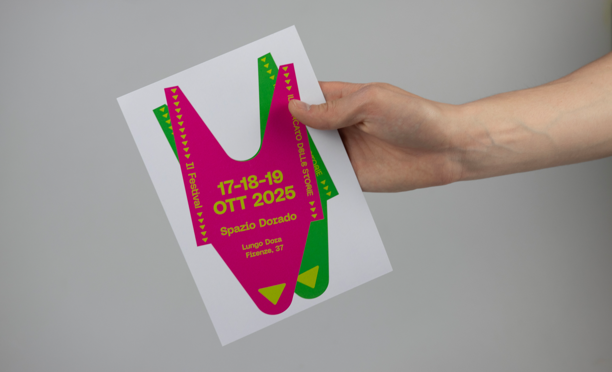
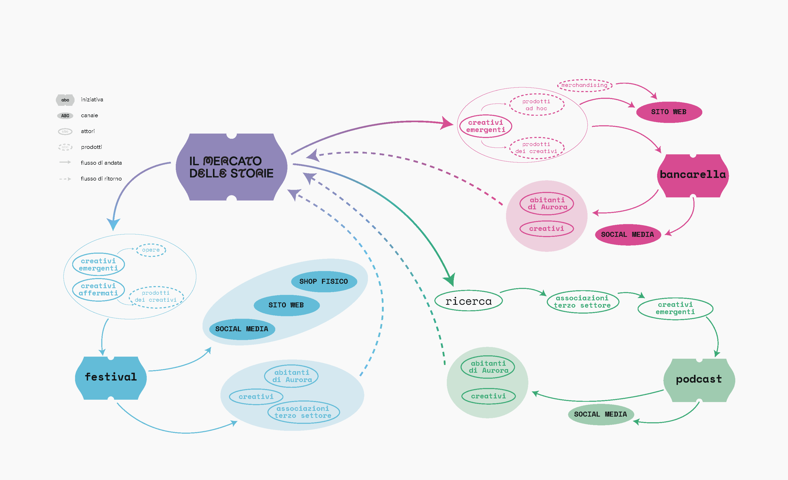
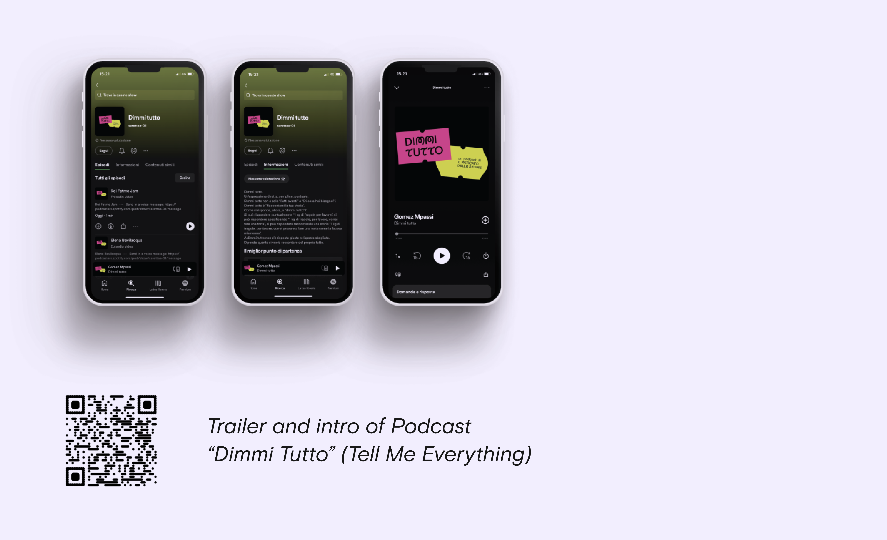
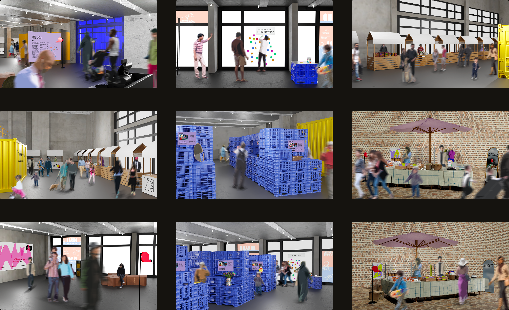
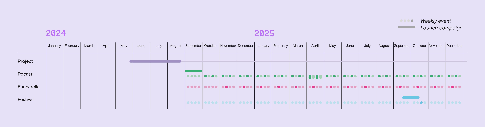
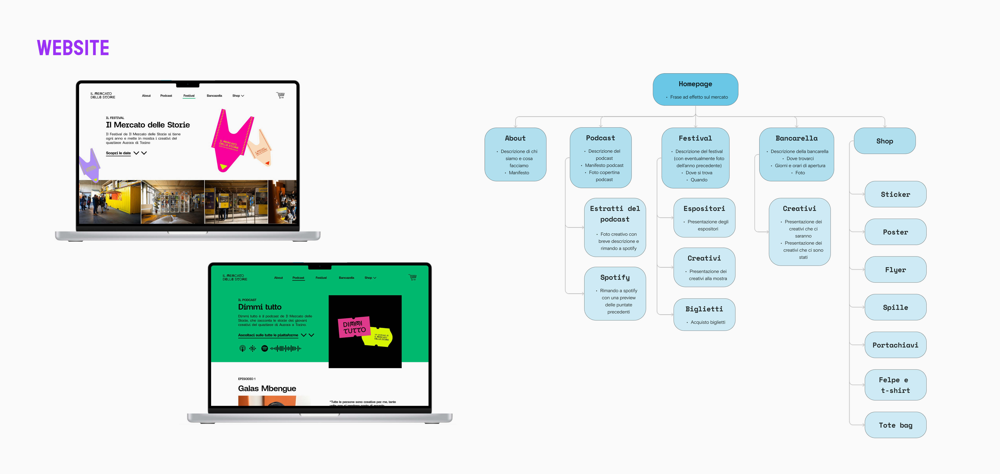
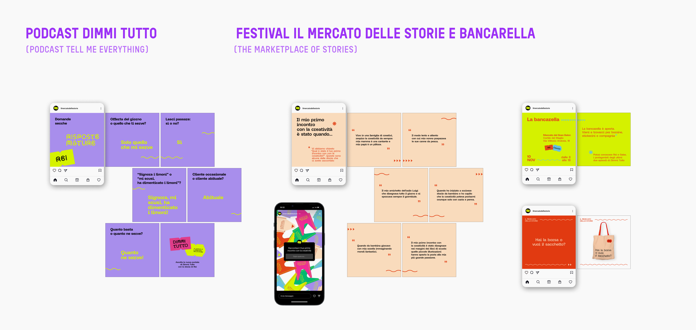

Social Innovation · 2024
Il Mercato
delle Storie
A social innovation project enhancing creativity in Turin's Aurora neighbourhood
Aurora is a neighbourhood within the 7th District of Turin — situated close to the city centre but characterised by demographic and socioeconomic features that already classify it as a periphery. The research explores the concept of creativity in its broadest sense, focusing on how it can be directed towards young creatives within the cultural context of the Torino Creativa project.
To investigate the neighbourhood we employed a flexible method that combines territorial-analysis tools, gathering and analysing both statistical-quantitative and perceptual-qualitative information. Starting from a historical overview, we considered factors related to the population composition — notably multicultural and youthful.
Aurora, due to its diverse population, stands out as one of the liveliest and most dynamic neighbourhoods in Turin. It's a place of contradictions: bustling with commerce, abundant in services for vulnerable groups, yet with public spaces that need attention.

Section 01 · Research Materials
Aurora in data, Aurora in voices.
The research was condensed into a printed kit: a set of data cards covering population, services, commerce and public space, and a longer "Aurora in Dati" booklet that brings the statistical layer together with field-survey notes.
Both pieces were designed to be read by residents and stakeholders, not just by the team — distilling QGIS layers and interviews into something that opens a conversation.


Section 02 · Applications
A podcast, a market stall, an annual festival.
The Marketplace of Stories is a systemic, organic, multi-initiative project with the ultimate goal of enhancing the creativity present in the Aurora neighbourhood by telling it. The project is developed with the podcast "Dimmi Tutto" (Tell Me Everything), the market stall (Bancarella), and an annual festival.
Creativity is narrated with the common thread of the market — the beating heart and symbol of the Aurora neighbourhood — through different project outputs such as interviews, meetings and works. The creatives involved are rare, little-known voices who deserve a space to tell their story and present their vision of "creativity."
The Story Market is about territory, participation and exchange.
Section 03 · Flow Diagram
How the three formats feed each other.
The system diagram maps how podcast, stall and festival exchange creators, audiences and stories across a year — turning what could be three separate side projects into one self-reinforcing loop.

Section 04 · Podcast, Festival & Bancarella
Same identity, three rituals.
The same identity carries across the three formats: a weekly podcast that interviews neighbourhood creatives ("Dimmi Tutto"), a recurring market stall that hosts works and conversation, and a yearly festival that gathers everyone in one place — same colour palette, same typography, distinct rituals.


Section 05 · Communication Strategy
A two-year calendar of stories.
The communication strategy unfolds across a two-year timeline (2024 – 2025), coordinating weekly events and launch campaigns across all three initiatives. The vibrant colour palette reflects the multicultural energy of the Aurora neighbourhood.

Section 06 · Project Development
Website, social, print.
The closing materials translate the identity into the three media residents most often meet it through: the project website, the Instagram social feed, and the Bancarella's printed signage.

